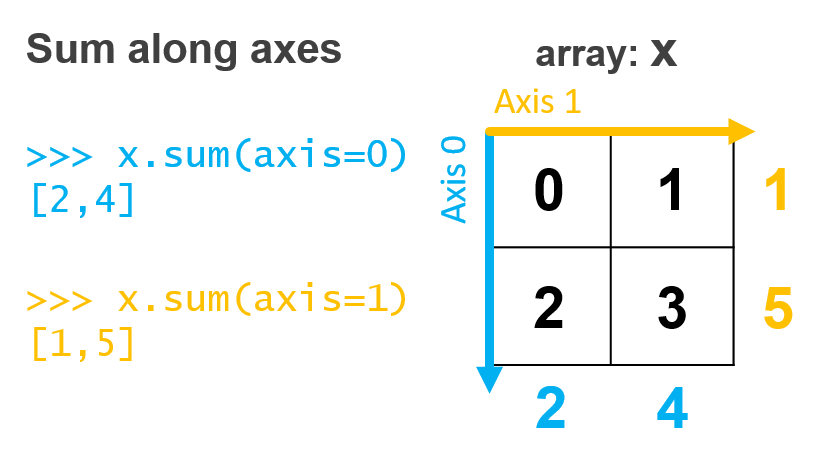

Summarizing Arrays#
Arrays of numbers are very useful tools for storing and organizing large collections of data. Often, however, we want to summarize these collections of information to provide a sense of the data as a whole. We often do this instinctively in our daily lives. For example - want to know if we’re getting a good price on buying a car? Look at the average price of that care in the area and compare the asking price. Want to know if your home is at risk of being flooded? Look at the maximum flood height in the area over the past 200 years and compare that to your home. We use data summaries every day for decision-making: these are all data-driven approaches to decision-making. In other words, rudimentary data science.
We touched on summarizing array information earlier when we discussed vectors. We now want to be able to summarize a collection of numerical data by calculating sums, minima, maxima, averages, standard deviations, or even counts of the number of elements in a collection. Here we’ll be diving deeper into summarization techniques and will explore how they can be applied to multidimensional arrays as well. For each of these summarization techniques, numpy has methods that are ready to help!
Your core summarization functions are as follows:
Sum:
sumMinimum:
minMaximum:
maxAverage:
meanMedian:
medianSize/Length/cardinality/number of elements:
sizeNumber of nonzero elements:
count_nonzeroStandard deviation:
std
Let’s create a simple array to demonstrate these features. (As a best practice, it’s always good to start with a simple example that you can verify or compute by hand, if possible, to make sure your code is working as expected - think test-driven development as was discussed in the last course)
import numpy as np
x = np.array([0, 1, 0, -2, 12])
This simple array shows that each of the summarization methods shrinks the data down to a single number. A data science term for this is dimensionality reduction - we can represent the array x with any one of these summary quantities.
print(f"Sum = {np.sum(x)}")
print(f"Mean = {np.mean(x)}")
print(f"Min = {np.min(x)}")
print(f"Max = {np.max(x)}")
print(f"Median = {np.median(x)}")
print(f"Size = {np.size(x)}")
print(f"Count nonzero = {np.count_nonzero(x)}")
print(f"Standard Deviation = {np.std(x)}")
Sum = 11
Mean = 2.2
Min = -2
Max = 12
Median = 0.0
Size = 5
Count nonzero = 3
Standard Deviation = 4.995998398718719
Summarizing 1-dimensional arrays is pretty straightforward. This same concept can be used on arrays of far higher dimensionality. In those cases, we just have to be careful to adjust the parameters accordingly. Let’s define a new array y that is a 2-dimensional matrix. Remember, this is an array of arrays.
y = np.array([[0, 1], [2, 3]])
y
array([[0, 1],
[2, 3]])
In this case, we have an array of two entries; each entry is an array: the first array has the values 0 and 1, and the second array has the values 2 and 3. We typically describe this array as having two rows (where the first row is [0 1] and the second row is [2 3]) and two columns (the first column is [0 2] and the second column is [1 3]).
Now let’s run each of the summary functions again and see what happens:
print("Sum =", np.sum(y))
print("Mean =", np.mean(y))
print("Min =", np.min(y))
print("Max =", np.max(y))
print("Median =", np.median(y))
print("Size =", np.size(y))
print("Count nonzero =", np.count_nonzero(y))
print("Standard Deviation =", np.std(y))
Sum = 6
Mean = 1.5
Min = 0
Max = 3
Median = 1.5
Size = 4
Count nonzero = 3
Standard Deviation = 1.118033988749895
We can see that these functions operate across all elements in the array, regardless of which row or column they are a part of. We could do this on any size matrix we wish.
Sometimes, however, we want to perform these summarization operations just down each column or just across each row. This is often the case when we are working with tabular data. Imagine each row represents a patient and each column represents a different characteristic of that patient (weight, height, temperature). We may want the average weight, height, and temperature of the patients. We can do that, we just need to specify which axis along which to perform the summarization along. For a matrix of data axis 0 is down the columns and axis 1 is across the rows (see the figure below).
Let’s take an example using our matrix y above:
np.sum(y) # Sum of all elements
6
np.sum(y, axis=0) # Sum of each column
array([2, 4])
np.sum(y, axis=1) # Sum of each row
array([1, 5])
How these summarization functions are computed is described in this figure:

These same techniques can be used with other numpy functions that compute various statistics. These techniques can also be applied to higher dimensional arrays (3, 4, or more dimensions) using the same basic principles and functions.
Aside. All of the functions we described above have the functional form np.<function name>(<input array>). However, you may also see some of these functions accessed as a method of the ndarray object class (the standard object type that numpy uses for representing arrays. Just as we discussed earlier around object-oriented programming, a method is a function associated with an object. For those methods of ndarray objects in numpy, they can be accessed by using the alternative syntax of: <input array>.<method name>(). Here’s an example with the max function:
np.max(y)
3
y.max() # Here we access the "max" method of the "array" object
3
y.max(axis=1) # You can specify the axis to compute along as well as was done with np.max(y, axis=1)
array([1, 3])
Which should you choose? For summary functions, either will yield the same result so pick the one that keeps your code easier to read. There are other ndarray methods such as x.sort() that will operate on your array in-place, meaning that it replaces the content of the original array while the function np.sort(x) returns a sorted copy, leaving x unchanged.
Recap#
Many common data science applications of gathering insights or making decisions based on data rely on summarizing those data
Summaries such as calculating minima, maxima, and sums can be applied readily to matrices of two or more dimensions.
In the next lesson, we will walk through an example of how these techniques can be used in practice.